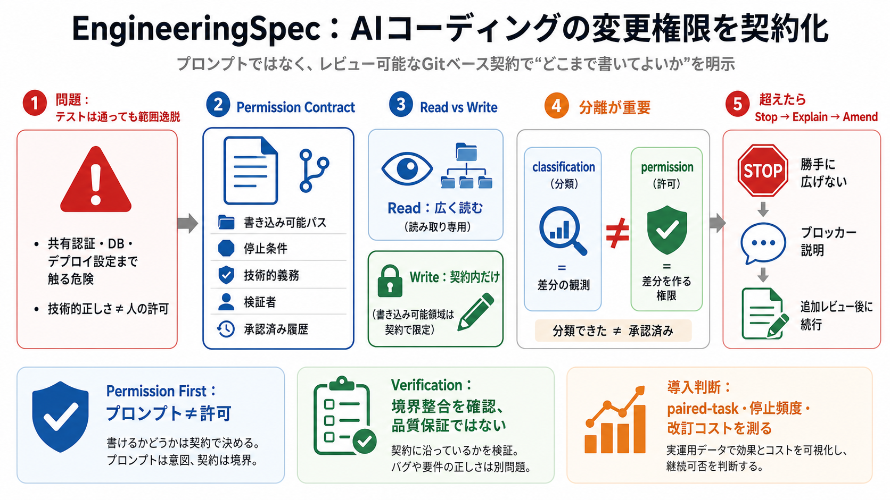

EngineeringSpec Explorer
EngineeringSpec Explorer. Search lifecycle, ownership, obligations and declared path impact. This view explains contract…

AIコーディングエージェントに「どこまで書いてよいか」を、プロンプトではなくレビュー可能なGitベース契約として渡す。
目的どおり実装できても、認証ミドルウェアの共有部やDBテーブル、デプロイ設定まで触れてしまう可能性がある。
permission（許可）は、プロンプトや探索結果ではない。書き込み可能な境界を含む「権限契約（permission contract）」として固定する。
承認された設計変更（engineering change）を、バージョン管理された契約として表現し、エージェントが読む前に trusted base から取得する。
エージェントはリポジトリを広く読むことは許容されるが、書き込み権限は契約で指定された境界に限定される。
classification（分類）は「差分をどう観測したか」の説明にすぎない。permission（許可）そのものではない。
classificationが許可を意味すると誤解すると、verificationが“未来の許可”を捏造する危険がある。EngineeringSpecはここを切り離す。
契約範囲を超える必要が判明したら、停止→ブロッカーを説明→追加のレビュー済み権限（amendment）を取得してから続行する。
RC17は権限モデルを変えず、エージェント向けチケット表示をコンパクト化し、permissionとclassificationを明確に分離する。
verification（検証）は「権限境界との整合」を確認するもので、ソフトウェア品質やセキュリティの保証そのものではない。
モデルが本当に生産性・安全性を高めるかは十分な証拠がないため、paired-taskによる外部パイロットで検証する姿勢を取る。
EngineeringSpecは、許可（permission）をレビュー可能な契約として固定し、分類（classification）と分離し、範囲逸脱を停止と改訂で封じる。
権限と分類を分離し、verificationを品質保証に誤って拡張しない点は強い。一方で、契約粒度やamendment運用コストは定量不足で不確実性が残る。
導入判断には、paired-task結果だけでなく、停止頻度・契約粒度・失敗ケース分析の定量も確認する。
EngineeringSpec Explorer. Search lifecycle, ownership, obligations and declared path impact. This view explains contract…
Please do not submit or discuss any proprietary or trade secret information (intellectual property) during the RCA event…
| 36 | /conf/core/job-success | core.jobs.echo | implemented | Validate that the job status info complies with the requi…
| Corps Castle Item is restricted to U.S. Army Corps of Engineers, CAC required. Document will open in a new window. …
'/%3E%3Cpath d='M16.0001 7.9996c0 4.418-3.5815 7.9996-7.9995 7.9996S.001 12.4176.001 7.9996 3.5825 0 8.0006 0C12.4186 0 …